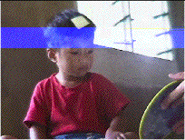
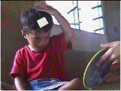
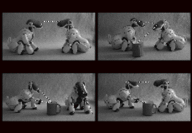

Much research today in cognitive ethology
and developmental psychology is concerned with studying the different levels in
the continuum of self-cognizance from self-distinguishing to self-knowledge to
knowledge of self-knowledge[i].
As an example of
self-distinguishing in humans, take the case of visual exploration. When you
move your eyes, your brain must distinguish movements of the images in the eyes
that are produced by object movements, and image movements produced by the fact
that you yourself are moving your eyes. All aspects of human behavior involve
self-distinguishing in this basic way[ii].
Babies soon after birth demonstrate that they are on the route to drawing the
line between themselves and the outside world[iii].
For example, if you touch a newborn baby's cheek, it will turn its head in that
direction. But if the baby accidentally touches its own cheek with its hand,
its head will not tend to turn. This shows that the baby's brain must
differentiate what it is doing and what other people are doing to it. You can
easily confirm that even babies only a few weeks old will attend more to an
event which they themselves are controlling than to an event that they have no
control over: for example if you tie a string to a baby's foot and attach it to
a bell, the baby will rapidly start moving the foot that makes the bell ring
more than the other foot. This suggests that their brains are attempting to
extract the dependencies linking their own actions to changes in their sensory
input. A very important manifestation of the fact that babies quickly come to
distinguish themselves from the world is the fact that whereas at first they
spend a lot of time grasping their own hands, at age approximately 2 months they
start systematically reaching for external objects. To do this they must be
distinguishing these objects from themselves. Another very important
manifestation requiring the self to be distinguished from the environment
involves other humans: babies in the first few months engage in
"proto-conversations" with caretakers, imitating their gestures,
smiling, reacting by turn-taking to their behavior: they would only be able to
do this if they distinguish themselves from other people and situate themselves
with respect to them[iv].
As concerns self knowledge and the transition to knowledge of self-knowledge, there are remarkable experiments designed to test whether children
or animals have the notion that they are individuals separate from their
environments and other individuals, and that they know that they themselves
have thoughts, beliefs, desires and emotions which may be different or related
to other individuals' thoughts, beliefs, desires and emotions.
A classic experiment is the "mirror
test"[v].
In this, researchers use a clever trick to deduce whether an animal or child
recognizes that what it sees in the mirror really is itself at the present
moment rather than just another individual from its own species. A mark is put
on the animal's or child's forehead without it being aware of this. The animal
or child is then confronted with its image in a mirror. If it immediately
reaches to the mark, this shows that the animal or child has recognized that
what it sees in the mirror is itself, now. Note that being able to do this is a
different kind of capacity than simply recognizing itself in a photograph or
video recording: with the mirror, the child or animal has to understand that
the mirror represents the animal at the present moment[vi]. What is found is that human children start succeeding the test
after about 1.5 years of age[vii].
As concerns animals, the results remain controversial[viii],
but probably one can say that only chimpanzees, orangutans and dolphins get
anywhere near succeeding. A female elephant has recently also been claimed to
succeed in this task, but only if given a big enough mirror[ix].
 
Western Samoan child succeeding in the
mirror test. (from P. Rochat, 2003)
The mirror test may arguably be a test of
the existence of a notion of self because it checks whether an individual
understands its self as being situated at the present moment. In the
classification mentioned above, it is a test of self-knowledge. More subtle
tests are concerned with what we called knowledge of self-knowledge, that is
the ability to understand the state of mind of others and put oneself in their
place. Developing such a "Theory of Mind" is where things start
getting really difficult if not impossible for animals other than humans.
Simple examples that constitute a first
degree of Theory of Mind involve appropriate use and interpretation of gestures
like pointing and following another person's gaze. These apparently elementary
capacities for humans are surprisingly difficult for animals. Human babies
start around the first year of life making gestures indicating they want
something out of their reach or that they want you to look at something, and
later they start understanding that it is worth looking where other people look
or point. On the other hand studies suggest that among animals, essentially
only apes that have had close contact with humans spontaneously point[x].
Gaze-following in order to obtain information about food or predators is also
restricted to primates, although domesticated animals like dogs and goats and
sometimes horses can follow human gaze direction[xi].
The ability to lie and mislead is another
test of an individual's capacity to distinguish its own thoughts, motives and
desires from those of other individuals. Teachers at nursery school know that
children only become able to deliberately mislead around age four[xii].
A task used to directly test the ability to
mislead is a task where a child learns a game in which it points at a box to
indicate to an experimenter which of two boxes to open. The experimenter opens the
box and eats the chocolate that is in the box, if there is one. If not, the
child is allowed to eat the chocolate that will be in the other box. When
windows are placed in the boxes so that only the child can see where the
chocolate is, will the child mislead the experimenter into opening the wrong
box, so that the child can get the chocolate in the other box? Children are
able to mislead the experimenter in this way only after age four: until then
they can't inhibit their immediate tendency to directly indicate the chocolate[xiii].
Animals can also be tested on similar
tasks. It is shown that they are indeed able to deceive other animals in
various ways in order to secure access to food or mates, but it is only
chimpanzees, it seems, that do so to a degree approximating humans'.
Another, more sophisticated level of
comprehension of Theory of Mind is tested by the so-called "false
belief" task. Here, for humans, is the situation used by the inventors of
the task[xiv].
Using all manner of toys and puppets to help make things clear to the child,
the experimenter explains the following story to the child: Maxi (a well-known
Austrian puppet character) is helping his mother to unpack the shopping bag. He
puts the chocolate into the green cupboard and leaves for the playground. In
his absence his mother needs some chocolate: she takes the chocolate out of the
green cupboard and uses some of it for her cake: then she puts it back not into
the green but into the blue cupboard. She leaves
to get some eggs and Maxi returns from the playground, hungry. The experimenter
now asks the child the question: “Where will Maxi look for the chocolate?”
Children only start being able to select
the correct cupboard around 4 or 5 years of age, and then only when they are
told the task is tricky and that they should stop and think before acting[xv].
It seems that in equivalent nonverbal versions of this task all other animals
fail miserably, acting on information directly available to themselves rather
than on information that must deduce is available to other individuals[xvi].
These examples are only a few from an
active literature in developmental psychology and cognitive ethology concerned
with determining in which species, and at what ages, notions of self-knowledge
and "Theory of Mind" develop.
The preceding discussion provides the
beginnings of an answer to the question of whether we can construct a robot
with a self: as concerns the cognitive aspects of the self, there would seem to
be no logical or conceptual problem in conceiving such a robot. Each of the aspects of the self
that we have considered is a capacity that one should be able to build into the
robot[xvii].
In particular, going back to the classification of self-cognizance we defined
earlier, we see the following:
---
NEEDS REARRANGING!!
---
---
Another example of a capacity that might be
involved in the genesis of the self is the ability to distinguish mechanical
motion due to inanimate objects, and animate motion due to living agents like animals and humans. This is
perhaps the basis of the notion of the ability to ascribe intentions and goals
to other agents. To test this idea, work has been done with COG involving an
algorithm that measures the variability in the velocity of moving objects. Presumably
an object whose velocity does not follow simple laws of physics probably has a
"will of its own" and is therefore animate[xviii].
Another robotic platform that is being used
to investigate the emergence of the self is Sony's domestic dog robot, the
AIBO. As at CSAIL, at Sony Computer Science Laboratory in Paris the AIBO has
for example been used to study joint attention and pointing, except this time
in a "social" context (that is, with another AIBO: see Figure below).
It may be that knowledge of self-knowledge grow out of joint attention and
joint social coordination, and there are efforts among developmental
roboticians to show how this might be possible[xix].

Demonstration
of different situations preceding joint attention between Sony AIBO robots,
from Kaplan & Hafner (2004). a) Mutual Gaze.
Both robots are attending to each other’s gaze simultaneously. b) Gaze
Following. One of the robots is paying attention to an object, the other one
watches its eyes in order to detect where it is looking. c) Imperative
Pointing. Pointing to an object regardless whether another person or robot is
attending. d) Declarative Pointing. Pointing to an object to create shared
attention.
[i] An account of the huge literature on the development of
the self can be found in Povinelli, D.J (1995) The Unduplicated Self. In: P.
Rochat. The Self in Infancy. Amsterdam, Elsevier. 161-192. (See also Barresi
& Moore (1996); Neisser, U. (1988). Five kinds of self. Philosophical
Psychology, 1, 35–59.
[ii] The exact extent of the body boundaries can actually be quite flexible. For example when you use a pair of scissors to cut something, the scissors almost come to be considered part of you. When you drive your car, your car almost becomes part of your own body: you "feel" the wheels touch the curb when you park.
[iii] For a review of the development of infant self, see P. Rochat's book, "The infant's world", Harvard University Press, 2001. Also: Rochat, P. (2003) Five levels of self-awareness as they unfold early in life. Consciousness and Cognition 12 (2003) 717–731. Also: for neonatal imitation of facial gestures Meltzoff, A. and Moore, M.K. (1977) Imitation of facial and manual gestures by human neonates. Science 198, 75–78; Meltzoff, A. and Moore M.K. (1983) Newborn infants imitate adult
[iv] NEED REFS for all these affirmations. Possibly Lewis, M. (1995). Aspects of self: From systems to ideas. In P. Rochat (Ed.), The self in early infancy: Theory and research (pp. 95–115). Amsterdam: North Holland. Lewis, M. (2003). The emergence of consciousness and its role in human development. Annals of the New York Academy of Sciences, 1001, 104 –133. Lewis, M., & Brooks-Gunn, J. (1979). Social cognition and the acquisition of self. New York: Plenum.
NB extract from: Self-Representation and Brain Development Michael Lewis and Dennis P. Carmody Robert Wood Johnson Medical School, University of Medicine and Dentistry of New Jersey Developmental Psychology Copyright 2008 by the American Psychological Association 2008, Vol. 44, No. 5, 1329 –1334 0012-1649/08/$12.00 DOI: 10.1037/a0012681. Some aspects of self-development occur during the first year of life (Butterworth, 1992; Lewis, 1995; Meltzoff, 1990). However, self-representation does not emerge until the middle of the second year (Darwin, 1872/1965; Lewis & Brooks-Gunn, 1979). Lewis (2003) defined self-representation as the mental state or the idea of “me.” This representation includes knowledge of the recursive relation, “I know that I know,” as opposed to the more machine- like cognition captured by “I know,” which defines some self-like behaviors (Rochat, 1995). Visual self-recognition has been used as one measure of this self-representation (Lewis & Brooks-Gunn, 1979). There are many studies linking self-recognition to other abilities that mark more broadly the emergence of self-representation. For example, self- recognition is related to children’s self-conscious emotions, in particular embarrassment (Lewis, Sullivan, Stanger, & Weiss, 1989) and empathy (Bischof-Kohler, 1994), as well as altruism (Zahn-Waxler, Radke-Yarrow, Wagner, & Chapman, 1992). Self- recognition is related to autobiographical memories (Harley & Reese, 1999) and is associated with imitation (Asendorpf, 2002). Other measures of self-representation are possible. Pretense is an early manifestation of the ability to understand mental states, including one’s own (Leslie, 2002; Piaget 1951/1962), as well as understanding a negation by the self that “this is what I pretend it to be” rather than what it actually is. A third measure of self- representation is the use of personal pronouns, including “me” and “mine” (Stipek, Gralinski, & Kopp, 1990). More recently, Lewis and Ramsay (2004) found that the onset of visual self-recognition was associated with the use of personal pronouns, in particular “me” and “mine,” as well as with pretend play and suggested that all three abilities measure the self-representation. Specific brain region activation has been found to be associated with self-representational behaviors. The left superior temporal gyrus and the left medial frontal gyrus are activated when subjects engage in a theory-of-mind task relative to reading sentences (Fletcher et al., 1995; Gallagher et al., 2000; Mitchell, Heatherton, & Macrae, 2002). Activation of the left superior temporal cortex (Brodmann area 22), the left inferior parietal cortex, and the left and right occipital cortexes (BA 18) occurs when subjects judge whether adjectives are relevant to themselves (Fossati et al., 2003; Macrae, Moran, Heatherton, Banfield, & Kelley, 2004). In a study of brain activation to hearing one’s own name, Carmody and Lewis (2006) found activation in the middle and superior temporal cortex and the left middle frontal cortex. In general, there is agreement that self-representational behaviors activate regions near the temporo- parietal junction, although there are data suggesting activation of the medial frontal cortex as well (Fletcher et al., 1995; Kampe, Frith, & Frith, 2003). To measure brain activation developmentally as a function of the capacity to show self-representation, one would need to study the relation between the emergence of this representational ability and changes in brain function. Obtaining functional magnetic resonance imaging (fMRI) or positron emission tomography (PET) scans in very young children has been shown to be difficult (Souweidane et al., 1999), and there are few if any published fMRI studies of children between 15 and 30 months of age, which is the critical age range for the development of self-representational behaviors (Saxe, Carey, & Kanwisher, 2004). Paus (2005) has suggested that the mapping of brain maturation and its relation to social cognition should be undertaken. Michael Lewis and Dennis P. Carmody, Institute for the Study of Child
[v]
The test was originally due to Gallup (???) and has been extensively used in
different variations since then. The results on animals are controversial see
eg. Heyes, C. M. (1998). Theory of mind in nonhuman primates. Behavioral and
Brain Sciences 21 (1): 101-134. countered by Gallup (1998)(cf book by keenan
and Gallup) Premack; recent criticism by Schilhab, T. S. S. (2004). What mirror
self-recognition in nonhumans can tell us about aspects of self. Biology and
Philosophy 19 (1):111-126.
[vi] See Rochat (2003) for a very illuminating discussion of different capacities underlying the mirror test and its relation to self-recognition in videos or photographs.
[vii] Amsterdam, B. (1972). Mirror self-image reactions before the age of two. Developmental Psychobiology 5: 297-305.
[viii] cf. Heyes, C. M. (1998). Theory of mind in nonhuman primates. Behavioral and Brain Sciences 21 (1): 101-134 and the open commentary following this article, in particular Gallup (1998). A recent article with brief mention of many of the controversies is M. Nielsen, T. Suddendorf & V. Slaughter, Child Development, January/February 2006, Volume 77, Number 1, Pages 176 – 185; MENTION Premack. Davidson 1975 also in favor of heyes.
[ix] Diana Reiss, Frans de Waal and Joshua Plotnik of Emory University in Atlanta, Georgia presented three elephants at the Bronx Zoo in New York City with a mirror. They began inspecting themselves with their trunks while staring at their reflections, and one repeatedly touched a mark painted onto its head (Proceedings of the National Academy of Sciences, DOI: 10.1073/pnas.0608062103).
[x] D.A. Leavens (2004) Manual deixis in apes and humans. Interaction Studies, 5, 3, 387-408
[xi] J. Kaminski, J. Riedel, J. Call & M. Tomasello
(2005) Domestic goats, Capra hircus, follow gaze direction and use social cues
in an object choice task. Animal Behaviour, 69, 11-18. For further information
see for example the website of the Department of Developmental and Comparative
Psychology (dir. M. Tomasello) at the Max Planck Institute for Evolutionary
Anthropology http://www.eva.mpg.de/psycho/index.html. For a recent study on
gaze following see Shepherd, S. V., & Platt, M. L. (2008). Spontaneous
social orienting and gaze following in ringtailed lemurs (Lemur catta). Animal
Cognition, 11(1), 13-20.
[xii] see Wellman, Cross & Watson (2001) for a meta-analysis of the literature on false belief.
[xiii] For nonhuman primates see Daniel J. Povinelli and Todd M. Preuss, Theory of mind: evolutionary history of a cognitive specialization. Trends in Neuroscience, 18(9), 1995; D. Premack. “Does the chimpanzee have a theory of mind?” revisited. In R. Byrne and A. Whiten, editors, Machiavellian Intelligence. Social Expertise and the Evolution of Intellect in Monkeys, Apes, and Humans. Oxford University Press, 1988.
[xiv] Wimmer & Perner (1983); cf also Perner (1991) Understanding the representational mind.
[xv] Because of the numerous practical difficulties a child must face in understanding and correctly responding in such a task, responses may not truly reflect the child's actual cognitive capacities. Indeed it seems that whereas children at age 3 do not correctly respond verbally, even as early as 15 months (c. Onishi & Baillargeon, 2005) children look in the right place. See the discussion in Leslie (2005) and Bloom & German (2000).
[xvi] M. Tomasello & J. Call (1997) Primate Cognition. Oxford: OUP. Although a recent article suggests that chimpanzee's capacities have been underestimated: M. Tomasello, J. Call & B. Hare (2003) Champanzees understand psychological states -- the question is which ones and to what extent. Trends in Cognitive Sciences, 7 (4) 153-156.
[xvii] This view is espoused by a number of contemporary philosophers and cognitive scientists, notably Paul Churchland (REFS! OTHERS??? cf Fred Pascal)
[xviii] Scasselati (2002)
[xix] Kaplan & Hafner (2004) give an excellent overview on the development of joint attention in children and suggest how it might be implemented in robots, in particular in reference to the Sony AIBO.